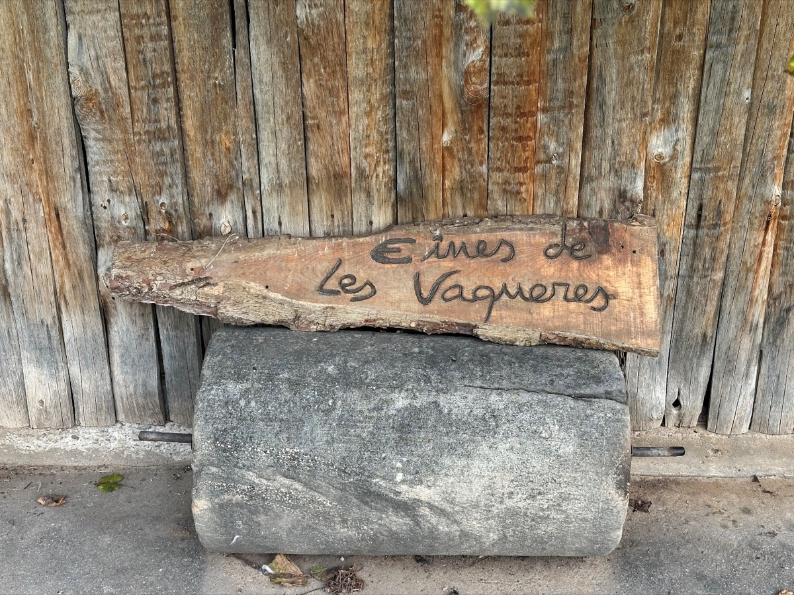

博物館：現在から過去を見つめる

この空間に入ることは、時をさかのぼる旅です。自給自足と、自分たちの資源を最大限に生かすことに根ざした暮らしへの旅。古い道具、仕事の道具、写真、地図、思い出の品が、日々の暮らしが土地や労働、そして世代から世代へ受け継がれた知恵と深く結びついていた時代へと私たちを近づけます。
この博物館は、オルタの Les Vaqueres の一家が所有していた品々や写真を通して、私たちの歴史のこの時期を発見するよう誘います。自家消費のための生産に基づく自給経済から、次第に生産を重視する経済へと移り変わった世界の習慣、仕事、暮らし方を知ることができる証言です。
その途中で、私たち自身の個人的な、そして共有された歴史の記憶にも出会います。学校、職業、家事、そしてリェイダのオルタの家族の日常を形づくっていた小さな事柄です。
この博物館は、自給自足が畑仕事だけの問題ではなく、家庭の知恵や実用的な技術、そして手元にあるものを生かすことでもあったことを示しています。家で石けんを作り、ほうきを編み、周りの土地が与えてくれるものを使うこと。そして服を縫い、繕うこと。継ぎを当て、作り直して長持ちさせることです。
私たちは、文化遺産としても人間的にも大きな価値のあるプロジェクトを形にしたいと考えました。Les Vaqueres の一家の品々、写真、思い出を通して、今では遠く感じられるけれど、私たちがどこから来たのかを理解する助けになる暮らし方をよみがえらせました。
この博物館にあるのは、古い道具の単なる目録ではありません。その背後にいる人々の物語、その知恵、必要、努力、そして幸せなひとときを伝えようとしました。
物は物事の記憶を保ちます。私たちが語る物語がそれに命を吹き込み、自分が何者で、どこから来たのかを理解する助けになります。
展示は三つのテーマに沿っています。
- 日々の暮らし：家族がどのように暮らし、働き、生活を組み立てていたか。
- 自給自足：資源を最大限に生かすこと、そしてわずかなもので暮らすことを可能にした知恵と技術。
- 家族と共有の記憶：ある時代を理解する助けとなる人々、思い出、小さな物語。
自給自足とは、家族が文字どおりすべてを生産していたという意味ではなく、外部の資源にできるだけ頼らないよう努めていたということです。
鏡の中の過去と現在

入口では、大きな鏡が、立ち止まって見るよう誘うメッセージとともに私たちを迎えます。
記憶とセピア色の写真を通して、今日と出会う昨日へのかけがえのないまなざし。
鏡は単なる飾りではありません。過去と現在の対話の比喩です。鏡をのぞくと、自分の姿が映るだけでなく、私たちより前に始まり、何らかの形で私たちの中に生き続けている物語の一部として自分を見いだします。
それは、自分がどこから来たのかを理解するために振り返り、受け継いだものを大切にし、先人たちと私たちを結ぶきずなを発見するための誘いです。
ピレネーからリェイダのオルタへ：ある家族の物語

このイラスト漫画は、山に根を持つ Les Vaqueres の一家が、リェイダの平野にやって来て根を下ろすまでの物語を描いています。
コマには、たどってきた道のり、暮らし方の変化、そして別の土地での新しい章の始まりが描かれています。それは一つの家族の物語であると同時に、より大きな移住の一部でもあります。新たな機会を求めて平地へ下り、リェイダのオルタを形づくり、そこに人が住むことに貢献したピレネーの多くの家族の移住です。
この漫画は、努力と勤勉さと適応力によって新しい土地に根を下ろした世代の暮らしを身近に感じさせてくれます。家族の記憶の記録であると同時に、リェイダのオルタがどのように開拓され、変わっていったかという歴史の一片でもあります。
どの家族の背後にも、たどってきた道、生まれた場所、語る価値のある物語があります。これらのコマは、その物語を取り戻し、先人たちの記憶を生き続けさせる助けになります。
Les Vaqueres：三世代、ひとつの人生の物語

この額は、生活を組み立て、働き、土地と関わり、知恵を受け継いでいくひとつのあり方を理解する助けになります。
ある暮らし方を生きた人々がいなくなると、その品々や写真や思い出は、もう戻らないけれど守る価値のある世界の証人になります。
この額が特別なのは、三つの異なる時点を通して、一家のほぼ一世紀にわたる歴史を語っているからです。単なる写真の寄せ集めではありません。家族の連続性、世代間の変化、そして暮らし方の移り変わりを伝える視覚的な物語です。時が流れ、世代が移り、暮らし方が変わっていく様子を見せてくれる三つのスナップショットです。
1930年代：新しい生活の始まり
最初の写真には、夫婦とその娘たちが写っています。山からリェイダの平野へ下り、そこで新しい章を始めた家族です。勤勉な労働、土地への根づき、そして新しい家づくりに彩られた物語の最初の登場人物たちです。
1960年代：新しい世代へのバトンタッチ
二枚目の写真は、変化の時代へと私たちを連れていきます。新しい世代が引き継ぎました。アントニアは結婚し、すでに二人の子の母親です。家族は増え続け、暮らしは続いていきます。
この写真には、内戦と亡命の刻まれた家族の歴史の記憶も残っています。フランスに亡命し、何年も後に再びスペインに入国できた親戚の車が写っているのです。再会、距離、そして時も政治も断ち切れなかった家族のきずなを物語る細部です。
2010年：ローラ、ひとつの暮らし方の生きた記憶
最後の写真群は、2010年に亡くなった Les Vaqueres の最後の一人、ローラへと私たちを導きます。すでに大きく変わった社会の中で、彼女は自給経済の知恵や習慣の一部を守り、実践し続けていました。博物館の鍵となる人物であり、自給自足の世界と現代社会をつなぐ架け橋です。
彼女はラ・ミジャーナで摘んだボッジャという植物でほうきを作り、家で石けんを作り続けました。それまでの世代の日常の一部だった伝統の技を生き続けさせていたのです。
ローラとともに一つの章が閉じますが、土地が与えてくれるものを生かし、手仕事と、世代から世代へ受け継がれた知恵に基づく暮らし方の記憶は残ります。
これらの写真は、歴史が大きな出来事の中だけでなく、人々の暮らしや日々のしぐさ、そして守らなければその人たちとともに消えてしまうかもしれない小さな知恵の中にもあることを思い出させてくれます。
スーツケース：亡命、帰還、希望の記憶

これらのスーツケースはつらい物語を語りますが、人々が人生を立て直す力についても語っています。強いられた旅、先の見えない不安、引き裂かれた家族、そしてやり直す場所を見つけたいという希望を表しています。
これは休暇に行くためのスーツケースではありません。人生、別離、そして生き延びた物語を秘めています。苦しい時代に、家族の何人かが、ほかの多くの人々と同じように歩まねばならなかった道を表しています。戦争と弾圧から逃れるためのフランスへの亡命、そして家を追われた後の山への帰還です。
どのスーツケースの背後にも、いつも自ら選んだわけではなく、状況によって強いられた旅があります。旅立つことは、家も土地も思い出も、そしてしばしば家族の一部をも後に残し、より安全に暮らせる場所を見つけることを願うことでした。
今もこれらのスーツケースは、その物語の一部を守っています。中には家族の書類や思い出の品が入っています。権利証書、配給手帳、写真、そして戦争と欠乏と社会の変化に刻まれた時代のその他の記録です。
それらは小さな記憶のアーカイブとなり、家族の経験をつなぎ合わせ、あの出来事が人々の日常にどう影響したかをよりよく理解する助けになっています。
なぜなら、スーツケースに入っているのは、ときに私たちが持っていくと決めたものではなく、残していかざるを得なかったすべてだからです。
裁縫を学ぶ：家族みんなの服をつくる

自給自足に基づく家計では、お金を節約し、出費をできるだけ抑えることが欠かせませんでした。今なら専門家に任せたり、新しく買ったりして済ませる多くの仕事を、当時は家族の資源と知恵を使って家でこなしていました。
写真の主役はミシンですが、その背後には学び、自発性、そして家計のやりくりの物語があります。
これは、Vaqueres の姉妹の一人で二児の母でもあったアントニアが、裁縫を学ぼうと決めた物語です。彼女は洋裁講習（corte y confección）を受け、家族全員の服を仕立てる技術があることを示す修了証を手にしました。
額にはその学びの記憶が残っています。講習の修了証と、参加したすべての若い女性たちの集合写真です。その横にはミシンがあります。布を服に変え、直しをし、服を長持ちさせるための欠かせない道具です。
家で縫うことは家計にとって大きな節約でしたが、同時に役に立つ貴重な技術を身につけることでもありました。工夫と献身と自分の労働で、日々の必要を満たす方法だったのです。
こうしてミシンは、自分で何でもできることが自給自足の欠かせない一部だった暮らし方の証人となります。
学校：ひとつの祖国、ひとつの言語、ひとつの宗教

この一角は、フランコ独裁下の農村学校の雰囲気を再現し、教育が体制のイデオロギーに強く彩られていた時代へと私たちを連れ戻します。
ここには当時の教室によく見られたものがあります。木の机、本、学用品、そして壁に掛けられた地図です。この地区にあったサンタ・カタリーナ学校の看板もあります。オルタの多くの家族の暮らしの一部だった古い農村学校を思い出させるものです。グレニャーナ地区では、教会の聖具室に置かれた公立学校がこれを補っていました。
フランコ時代の教育は三つの主要な原則に基づいていました。ひとつの祖国スペイン、ひとつの言語スペイン語、ひとつの宗教カトリックです。こうして学校は、体制が押しつけた愛国的・宗教的・社会的価値観を伝える道具となりました。
カタルーニャでは、カタルーニャ語が公的な教育や学校生活から締め出され、スペイン語が学校の必須言語となりました。一方でカトリックの宗教は、子どもたちの教育としつけの中心を占めていました。
この空間は、当時の学校がどのようなものだったか、何が教えられ、子どもたちがどんな世界で育ったのかを思い起こすよう誘います。また、学校が読み書きを教えるだけでなく、それが属する社会と歴史の瞬間をどのように映し出しうるかを考えさせてくれます。
どの教室にも欠かせなかった地図は、当時の知識と世界観を伝えるうえで学校が果たした役割も思い出させます。
屋外の暮らし：畑仕事と土地を生かすこと

屋外の暮らしは、土地を耕し、生きるために必要なすべてをそこから得ることを中心に回っていました。それぞれの作物には明確な目的があり、家の人々と動物の両方を養うためのものでした。
畑では家畜のためのアルファルファなどの飼料と、粉やパンにする小麦を育てました。小麦は多くの用途に使うわらも与えてくれました。さらに豚のためのビート、牛のためのカブ、鶏の餌にするトウモロコシも育てていました。
菜園は一年中使われていました。季節のリズムに合わせて、家族のための野菜を育てていました。畑の縁には果樹が何本かあり、その収穫は一年を通して使われました。
何ひとつ無駄にはできませんでした。収穫の時期には、冬のことも考えなければなりません。食料を蓄え、保存食やジャム、その他の自家製品を作り、新鮮なものがなくなっても果物や野菜があるようにしました。
特に目を引くのは、天井から吊るされた葦の棚、canyís です。編んだ葦でできていて、果物、とくにリンゴを冬の間保存するのに使われました。高く吊るすことで空間を有効に使い、食べ物が傷まず、ネズミも届かない適切な状態に保つことができました。
この道具や器具、伝統的な品々の集まりは、仕事が自然のリズムに従っていた暮らし方を示しています。育て、収穫し、動物に餌をやり、食べ物を保存すること。それらはすべて、自分たちの資源を最大限に生かし、一年分の必要を見越すことに基づいた一つの循環の一部でした。自給自足とは単に食べ物を生産することではなく、一年分の必要をまかなうために資源を計画し、使いこなすことだったのです。
それはほとんどすべてのものに使い道があり、家と家族を支えるために日々の知恵が欠かせない経済でした。
酪農

この空間は、家計を支えたもうひとつの重要な仕事、牛乳の生産と販売について語ります。リェイダのオルタに落ち着いた一部の家族が、畑仕事に畜産を加え、牛乳を収入源にした様子を示しています。写真にはこの仕事に使われた道具も残っていて、その小さな家業がどのように営まれていたかを想像する助けになります。
ピレネーの家族がリェイダのオルタに落ち着いたとき、多くの家族が日々の仕事に牛の飼育を加えました。牛乳の生産は、家計を補い、自分たちの労働でお金を得る方法となりました。
Les Vaqueres では、牛乳は二つの道をたどりました。一部は、毎日使う分を買いに農家まで来る近所の人々に直接売り、残りはリェイダへ運んで売っていました。
つまり酪農は、家の暮らしをすぐ周りの環境と結びつける仕事でした。近所の家族に新鮮な牛乳を届けると同時に、家族が自分たちの産物を町へ運ぶことも可能にしたのです。
展示されている酪農の道具、攪拌器、計量器、牛乳缶は、牛乳がどのように集められ、保存され、配られたかを思い出させます。搾乳の時間に縛られ、新鮮な牛乳を客に届ける必要がある、毎日休みなく続く仕事に欠かせないものでした。搾乳用の腰掛けまで見ることができます。
この仕事は、家族が持っているものを最大限に生かすために、農業と畜産をどう組み合わせていたかを示しています。土地が動物を養い、動物が牛乳を与え、その販売が家計を支えました。
酪農は、自給自足と生計を立てることがしばしば手を取り合っていたことを示す例です。家族の必要のために生産しつつ、余った分を売って、家のほかの出費に必要なお金を得ていたのです。
自給自足：土地が与えるすべてを生かす

博物館のこの部分は、その意味の核となる自給自足の考え方をとらえています。写真には、自然環境が与えてくれるものを生かすための、シンプルでありながら非常に専門的な道具が数多く写っています。
当時、自然は家族の手の届くところにある食料庫のようなもので、それが与えてくれるすべてを生かす術を知っている必要がありました。それぞれの仕事には専用の道具があり、どの品も日々の暮らしの特定の必要に応えていました。
これらの道具は、その暮らし方と、畑、菜園、木々、川、畦など、風景のさまざまな場所で食べ物を見つける力を物語っています。
たとえば、カタツムリを保管する caragolera、川で魚をとるための網 filat、鶏の卵を集める小さなかご、小鳥を捕まえる罠 ratera があります。
箱にはさまざまな作業道具も入っています。オリーブ摘みに使う serpeta、トウモロコシの種まき用の棒、鎌、そして畑でそれぞれ決まった役目を持っていたその他の道具です。
集めた食べ物の大部分は家族が食べていました。収穫や採集が必要以上にあったときは、余った分を市場で売ることもできました。こうして土地から得たものは、家を養うだけでなく、わずかな収入をもたらすこともあったのです。
想像力、観察力、そして周囲の環境についての知識が、道具そのものと同じくらい大切だったことに気づかされます。すべてを生かすことは必要に迫られたことでしたが、同時に人生をとらえるひとつの方法でもありました。
El mandongo：豚、一年分の食料庫

自給自足の家計において、豚は欠かせない役割を果たしていました。卵と肉を与えてくれる家禽とともに、食事の主要なたんぱく源のひとつでした。
豚は一年中、家と菜園の残り物で育てられ、屠畜の時期を迎えました。伝統的には最も寒い月、しばしば一月です。低い気温のおかげで肉の処理と保存がしやすくなりました。
Mandongo は豚をつぶすだけのことではありませんでした。段取り、経験、そして世代から世代へ受け継がれた知恵を必要とする一連の作業でした。動物のあらゆる部分を使い、何か月ももつ食べ物に変えなければならなかったのです。
そのためにさまざまな保存技術が使われました。肉の部位を乾燥させ、ソーセージを作って吊るして熟成させ、一部は加熱し、さらに脂の中で肉を保存する技法 tupina も作りました。
この空間の道具は、屠畜を一年の大半をまかなう蓄えを意味する祭りに変えた、つらくも皆で分かち合った仕事を身近に感じさせてくれます。
豚は、つまり本物の家族の食料庫でした。計画と勤勉さと保存の知恵のおかげで、一度の屠畜が何か月にもわたってさまざまな肉製品をもたらし、翌年また同じ循環が始まりました。マンドンゴは、この先を見越す文化の完璧な例です。食べ物を得ることだけでなく、長くもつように加工し保存する術を知ることが大切だったのです。
何ひとつ無駄にはできませんでした。動物のどの部分にも使い道があり、どの製品も家族が十分に食べられるよう支えていました。
余暇：トランプ、ラジオ、おしゃべり

日々の暮らしは仕事と務めだけではありませんでした。休み、少し楽しみ、家族一緒に過ごす時間もありました。
一日の仕事が終わった夜や、リェイダに住んでいた姉妹のカルメタが訪ねてきて皆が集まる日曜日には、この一角が小さな集いの場になりました。誰もが心待ちにしていたひとときです。
トランプは最もよくある娯楽のひとつでした。一勝負は、時間を過ごし、おしゃべりし、一緒に笑う機会でした。その間、いつもつけっぱなしのラジオが、音楽やニュース、そしてラジオドラマや番組Señora Francisのような日常の一部だった番組で彼らに寄り添っていました。
物語を語り、思い出を分かち合い、写真を眺め、近況を伝え合う時間もありました。楽しく過ごすのに多くは要りませんでした。トランプひと組とラジオ、そして家族がいれば十分でした。
この一角は、自給自足のもうひとつの側面を思い出させます。余暇が家と家族のきずなを中心に営まれていた素朴な暮らしです。博物館の中で、家族生活の最も人間的な面を見せてくれます。家族もまた、人生を楽しむ方法を見つけていたのです。
なぜなら、仕事や日々の必要を超えて、家族の思い出をつくるのはこうした小さな分かち合いのひとときでもあるからです。
この一角は、お金ではなく、ともに過ごした時間で測られる豊かさを語っています。
はかり：新しい農業経済へ

この最後の空間は、博物館の見学を重要な考えで締めくくるため、とくに大切です。自給自足と生存のための経済から、生産と販売のための農業へと一歩ずつ移っていった家計の変化です。
少しずつ、昔の穀物栽培は果樹、主に梨とリンゴへと置き換わっていきました。農場が生み出すものは、もはや家のためだけではなくなり、市場での販売がますます重要になっていきました。
三つの品がこの変化を理解する助けになります。
写真：新しい作物、新しい仕事
ある写真には、アントニアと夫のジュゼップが、果樹を病気や害虫から守るために石灰硫黄合剤（多硫化カルシウム）を準備している姿が写っています。新しい知識や技術、手入れを必要とする新しい種類の農業への適応を示す一枚です。
はかり：売るために量る
果樹栽培が主役になると、はかりは欠かせない道具になりました。農場で収穫した梨とリンゴの箱は一つ残らずこのはかりで量られました。収穫物を準備し、売るために必要な工程です。
サイズ選別器：市場のための果物
もうひとつの品はサイズ選別器です。梨の大きさを確かめ、販売に求められる寸法ごとに選り分けるために使われました。果物はもはや家族の食卓のためだけに価値があるのではなく、品質や商品規格の基準も満たさなければならなくなったのです。
この三つの品は、より専門化した、市場向けの農業への移行を物語っています。土地は依然として主要な生活の糧でしたが、必要とされるものも働き方も変わっていました。
こうしてはかりは、一つの循環の終わりと新しい循環の始まりを示しています。主に生きるために生産していた経済から、売るためにも生産しなければならない経済への移り変わりです。
伝統農業技術バーチャル博物館

伝統農業技術バーチャル博物館（MVTAT）は、リェイダ大学歴史学科の歴史・資料・遺産部門のもとで設立されました。
この博物館は、化石燃料が農業とその産物の販売に広く使われるようになるまで、農村生活の歴史を形づくってきた幅広い道具と技術を紹介することを目指しています。最初のトラクターや機械も展示し、役畜と人の労働、そして風や水で動くいくつかの技術が主な動力源だった伝統農業の道具と比べられるようにしています。
私たちは独自の博物館「Eines de les Vaqueres」を紹介する形で参加しています。そこでは、農業の変化と市場経済への段階的な移行を、リェイダのオルタのある家族の物語を通して示し、その時代全体の暮らしぶりを伝えています。